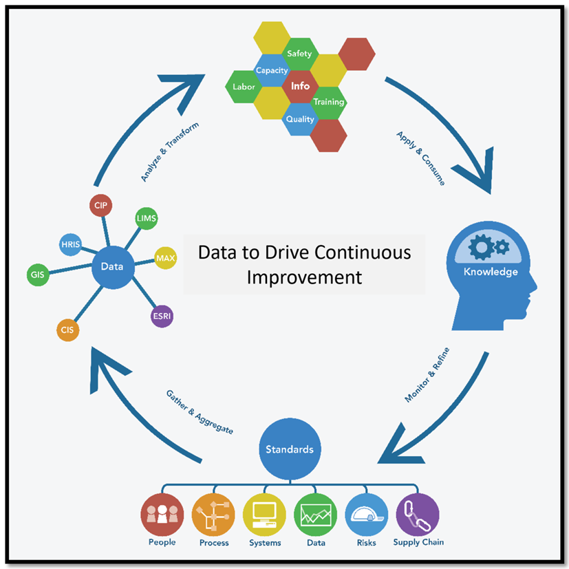

Sometimes the problem is strategic. Sometimes it is a process that hasn't worked properly for years. We are comfortable with both.
Gray Oak provides advisory, facilitation, training, and technical support across asset management, organizational capability, maintenance and reliability, data, and technology.
We begin by understanding what is happening and what needs to change, and we shape the work around that.

Our Services
Asset Management & ISO 55001
Establishing the line between strategy and the decisions made about your assets.
Asset Management & ISO 55001
Asset management should provide a clear line between what the organization is trying to accomplish and the decisions being made about its assets. We help establish that line and strengthen it when it starts to break down.
- Asset management policy and strategy
- Strategic Asset Management Plans (SAMP)
- Asset management plans
- Asset management system design and improvement
- Maturity and gap assessments
- Governance and decision-making frameworks
- Internal audit and management system assurance
- Performance evaluation and management review
- ISO 55001 implementation
- Certification, surveillance, and recertification readiness
- Continuous improvement planning
We have worked with ISO 55001 from inside the management system, well beyond audit preparation. That perspective matters because the difficult work continues after certification day.
Operations, Maintenance & Reliability
Translating asset management objectives into practices that make sense for your workforce.
Operations, Maintenance & Reliability
The strategy eventually has to reach the people operating and maintaining the assets. We help organizations translate asset management objectives into maintenance and operational practices that make sense for their assets and their workforce.
- Maintenance strategy
- Reliability-centered maintenance
- Work management
- Asset criticality and risk
- Planning and scheduling
- Maintenance performance measures
- Roles and responsibilities
- Process and procedure development
- Operational readiness
- Continuous improvement
The objective is clearer, more consistent work that is easier to improve, without adding procedure for its own sake.
People, Leadership & Change
Organizations don't implement change. People do.
People, Leadership & Change
A technically correct solution can still fail because responsibilities were unclear, leadership moved on, staff did not understand the reason for the change, or the new process simply did not fit the way work happened. We help address those issues directly through:
- Roles and decision rights
- RACI and accountability frameworks
- Competency development
- Knowledge management
- Leadership alignment
- Change planning
- Training and facilitation
- Organizational readiness
- Adoption and sustainment
We treat these as part of implementation from the start.
Data, Performance & Decision Support
Determining what information is needed to support decisions and performance.
Data, Performance & Decision Support
Organizations can have enormous amounts of data and still struggle to answer basic questions about their assets. We help determine what information is needed to support decisions and performance.
- Asset information requirements
- Data governance and ownership
- Data quality
- KPI development
- Performance measurement frameworks
- Dashboards and decision support
- Management reporting
- Data strategy
- Information governance
The goal is enough visibility into what is happening to decide what to do about it, and that rarely takes more metrics.
Technology & Digital Strategy
Technology should support the business. It should not become the strategy.
Technology & Digital Strategy
Technology should support the business. It should not become the business strategy. We help organizations think through technology decisions from the perspective of the work the technology needs to support.
- Technology strategy and roadmaps
- Digital maturity assessments
- CMMS/EAM strategy
- Business and technology alignment
- System requirements
- Technology governance
- Data and system integration strategy
- AI readiness
- AI use-case evaluation
We are technology-independent and don't need a particular platform to be the answer. Sometimes the right recommendation is a new system, and sometimes it is fixing the process first.
Specialized Advisory
Not every challenge needs a multi-year program.
Specialized Advisory
Not every problem or challenge needs a multi-year program. Some need a focused assessment, an independent set of eyes, a facilitated decision, or someone who understands both the management system and the operational reality.
We take on defined advisory engagements where our experience can help an organization understand the challenge, make a decision, or move stalled work forward.